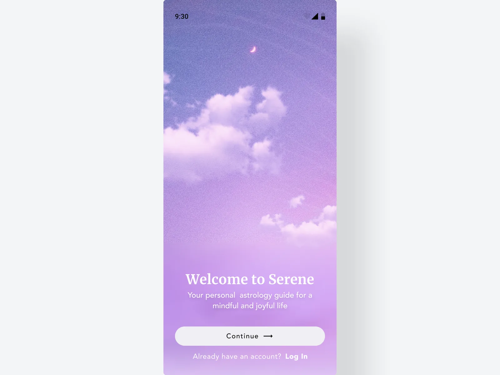
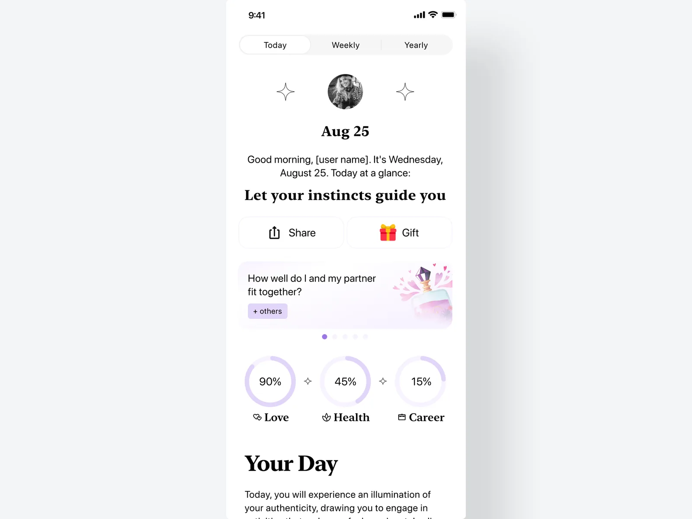
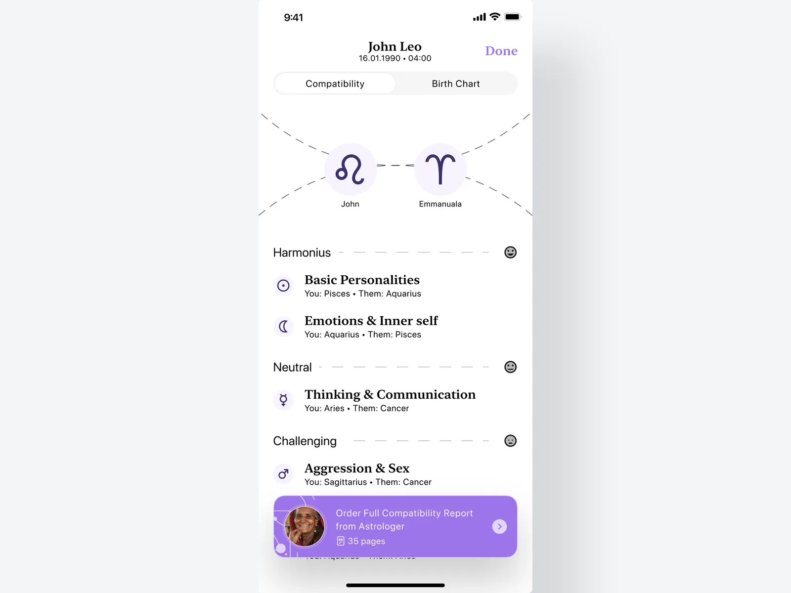
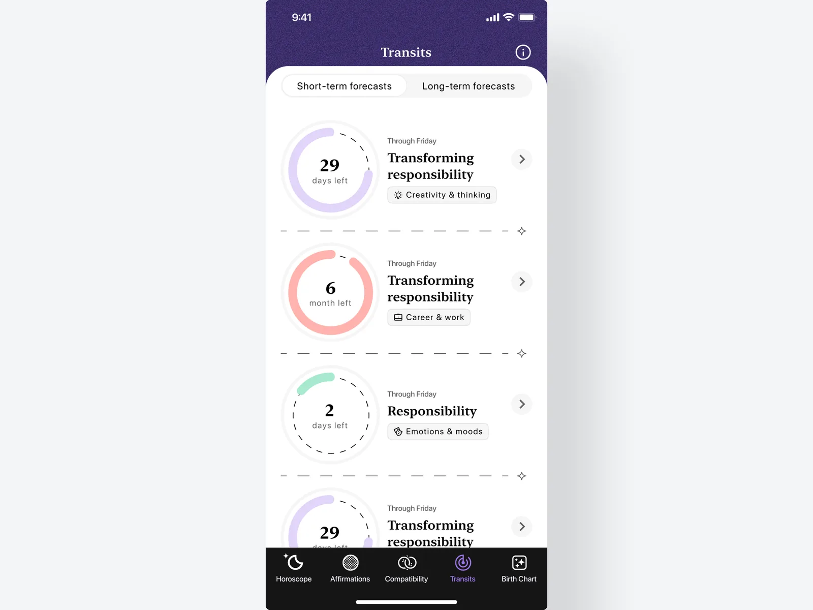
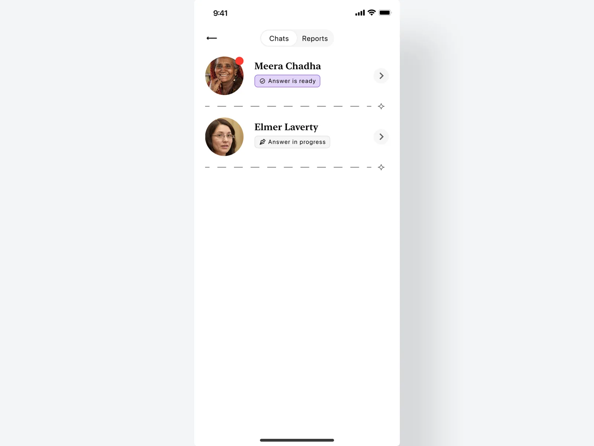

Headline: One Sentence Naming the Product, Your Move, and the Number It Moved.
Hero block. Always first, always full width. The one image that sells the case: product in its real context, not a clean mockup
placeholder:heroProse and figures
The default, and most of any case study. A heading, one or more paragraphs, bullets where a claim reads better as a list than a sentence, and a figure wherever a picture carries the point. All of it is plain markdown — ## Heading, paragraphs, - bullets, an image line — and the generator lays out whatever it finds. There is no choice to make between a "text block" and a "list block": a section holds whichever of these it needs.
One idea per section. A second paragraph that starts a new thought usually wants its own heading instead.
- Bullets earn their place when the items are genuinely parallel — outcome metrics, a short set of constraints.
- Every number carries its period and its baseline. A number without a baseline is decoration.
- Three is the ceiling. Past that, items start diluting each other.
A figure is optional on any section — but a section with nothing to look at is one a reader skims, so the working rule is that every section has one
placeholder:prose-figureA section can also be nothing but a figure: no heading, no words, just the image. That is the shape to reach for when the picture is the whole point and a caption would only restate it.
Block: Quote
A testimonial, not a decoration — attribute it to a real person with a role and a company, and give it a measurable result to carry, not just praise. Use it where someone else's word proves a point better than another paragraph of your own could. The whole block links out to where it was actually said — a LinkedIn post, a review, an email screenshot — so it's checkable, not just quoted.
"The quote itself — one or two sentences, naming what changed for them, not just how it felt."
Block: Code
Real, working code — not a mockup of it. This is the one block most designers can't use and you can: it says you shipped the thing, not just drew it.
struct ToggleRow: View {
@Binding var isOn: Bool
var body: some View {
Toggle("Auto-sync", isOn: $isOn)
.tint(.accentColor)
}
}Block: Compare
Two states of one thing in a single frame, with a handle that wipes between them. Use it when the change is what matters and the two images can occupy the same space; if they cannot be registered against each other, two separate figures serve better. Each side is one centred mockup — at this width a multi-screen composition cannot be read, and wiping across a row of small phones compares nothing.


Before AfterBlock: Carousel
Several screens where one figure would be a compromise — a product's surfaces, a run of states, variants of one idea. Each gets the whole frame in turn instead of being shrunk into a grid. Slides cross-fade rather than scroll, so the frame never moves and the eye keeps its place. Thumbnails are a tablist: click, or arrow between them.




Block: Table
For a comparison that has more than two columns of data — spec sheets, before/after with more than one dimension, anything a sentence would only make harder to scan.
| Dimension | Before | After |
|---|---|---|
| Row label | Value | Value |
| Row label | Value | Value |